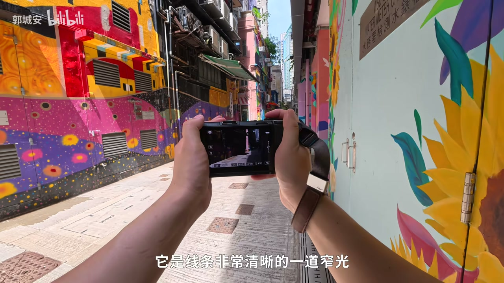
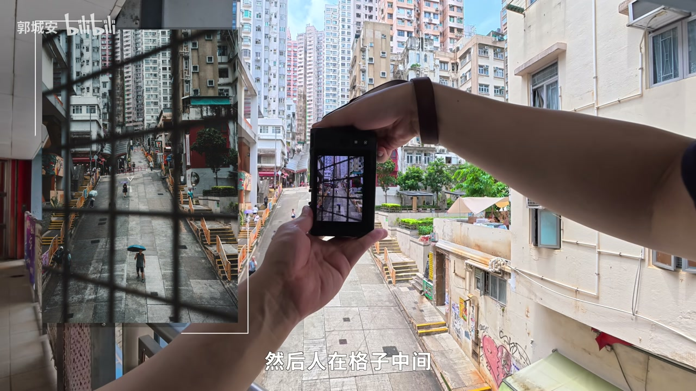
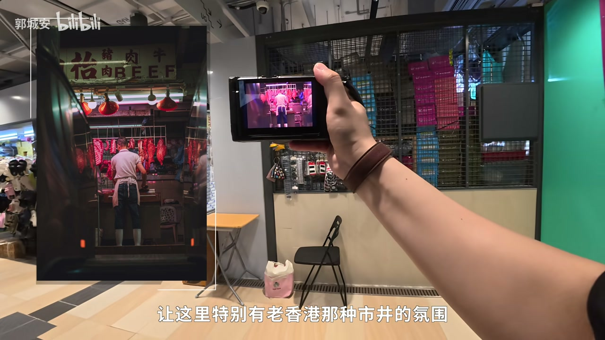
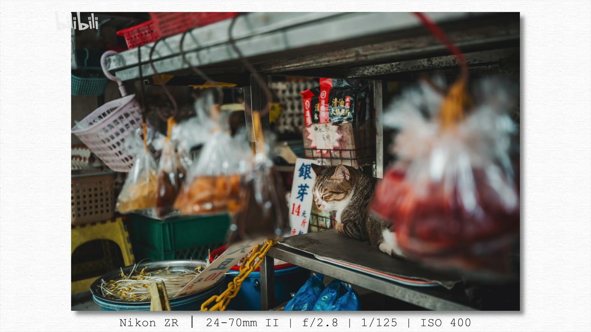
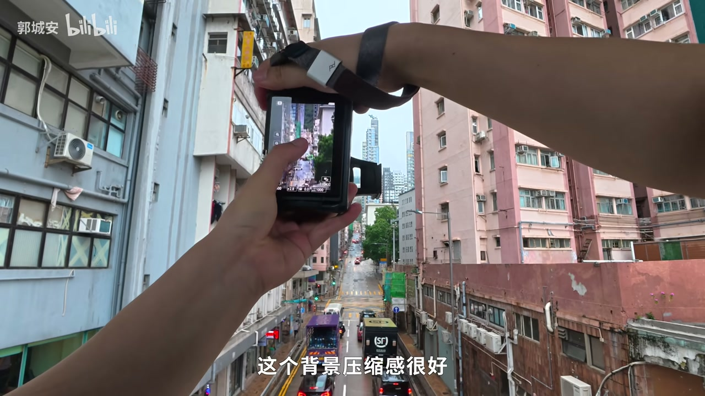
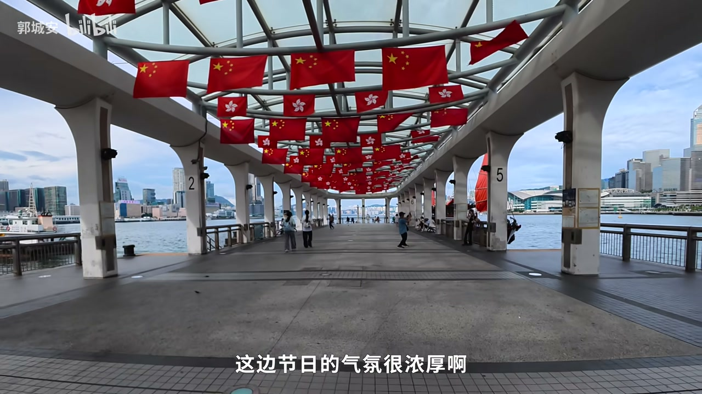
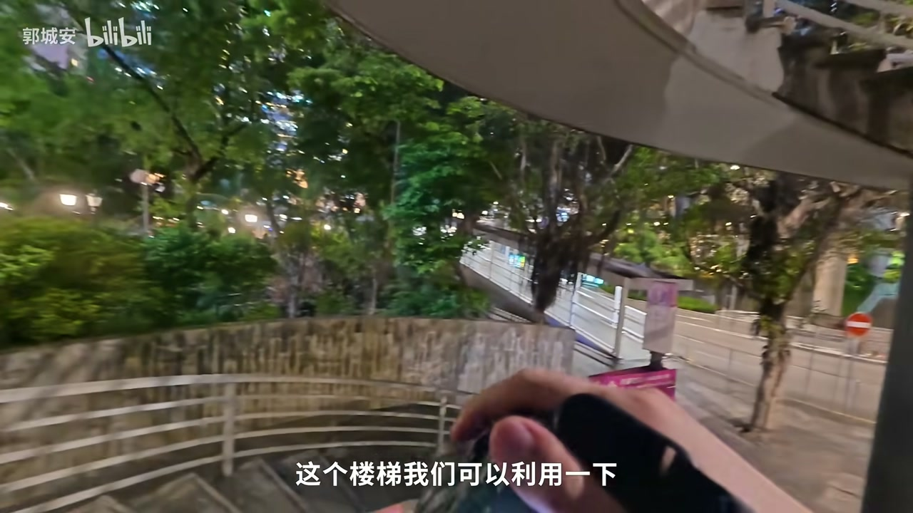
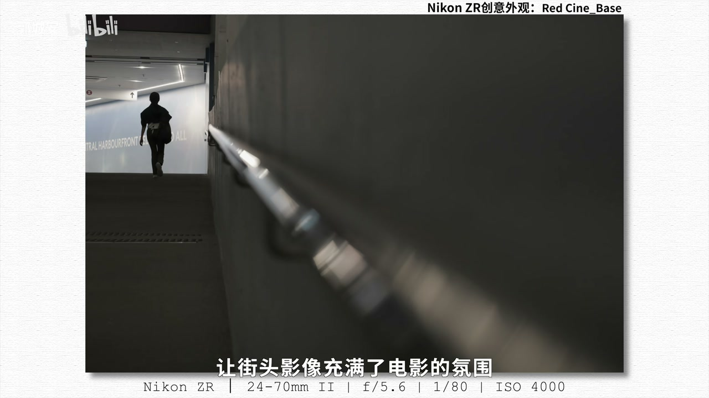

内容要点
UP「郭城安」带着尼康 ZR 在香港做第一视角扫街：西营盘窄光与栏杆前景、市集红光与触屏 A 档、自动 ISO 应对暴雨变光，再到中环码头纵深与自定义快捷键、夜景慢门与 RAID 低饱和滤镜，最后交代 24-70＋70-200 与视频规格。纪实语气，边拍边讲可复用的机内操作。
知识结构
窄光抓人；大屏取景；栏杆前景收光圈。
红光市井；触屏 A 档；猫与鸽子。
自动 ISO；暴雨；长焦压缩上坡。
对焦适合抓拍；码头窗位纵深。
拨轮＝光圈／ISO／曝光补偿；慢门光轨。
RAID 滤镜；双镜内变焦；视频动态范围收束。
港风电影感不只靠滤镜：先用光与前景控制层次，再用触屏／自动 ISO／自定义键把反应速度拉上来，夜景靠防抖与低饱和风格收束。
00:00-02:20西营盘：窄光、大屏与栏杆前景
好久不见的第一视角摄影：UP 带尼康 ZR 到香港，边拍边分享技巧。西营盘与中环气质不同，整面壁画墙上出现一道线条清晰的窄光，路人刚好走过——「运气太好」。00:55 第一视角手持取景可对上口播。
展示机身背面几乎整面是约 4 英寸大屏，小机身大屏取景舒服。用栏杆做前景时把前拨轮收小光圈：前景离背景远，光圈太大栏杆会虚没，实一点、人在格子中间，拥挤感才出来。02:12 栏杆前景可对照。


02:20-04:30市集红光、触屏 A 档与街头小动物
进入街市，空摊仍多；一张红光照片被形容为老香港市井，还带点怪诞。新手友好点：触屏直接进拍摄模式，当前 A 档（光圈优先），点调光圈；单箭头 1/3 档，双箭头整档更高效。
第三街遇睡觉的猫，再往高处抓路灯鸟与鸽子起飞瞬间——扫街节奏是走、等、抬手。03:08 红光成片、04:08 猫是本段记忆点。


04:30-06:50自动 ISO、暴雨与长焦压缩
UP 很喜欢把自动 ISO 做成可单独开关的功能：光线跳变或不想精细调时一点切自动，再一点回手动。随即出太阳却暴雨，电话亭挡不住，雨小后再走，上天桥用长焦看大上坡的背景压缩感。
此段强调街头天气不可控，机内要有「快速挡位」。05:50 附近街景对应变天后的继续拍摄。

06:50-09:00对焦适合抓拍，中环码头找纵深
旁白插入：大家先想到 ZR 的视频，但这次更想聊拍照——西营盘极端天气与转瞬街景里，对焦表现亮眼，抬手能定格；一机兼顾照片与视频。
次日中环码头：过天桥地道，过道明暗对比强；一排窗户纵深好，建议等人或看窗外，并用长焦强化纵深。海边已近回归周年，节日气氛浓，维港风里开始讲快捷键。09:10 码头红旗与天际线。

09:00-11:10自定义键：光圈、ISO、曝光补偿
机身按键简洁但可自定义：前拨轮设为光圈；正面录制键位改成 ISO，左手按住后拨轮调；1 号键做曝光补偿，光影场景用后拨轮加减。高频三键被逐一点名。
窗外有反光、车流密时试慢门光轨；楼梯可做前景拍后面大楼。夜幕下防抖加分，低速快门定格流动光影，动态则切视频手持。

11:10-13:07RAID 滤镜、双镜与视频规格
合适场景启用 RAID 色彩风格滤镜：低饱和柔和，让街头更电影。镜头搭配 24-70 II 与 70-200 II，覆盖常用 35／50，长焦压缩适合山地海边与密楼寻角；两支皆内变焦，重心稳、易用。
视频规格口播：超 15 档动态范围、RAID 色彩科学、6K 60P、散热、32 bit 浮点收音。总结：既能满足专业需求，也让新手快乐创作。11:45 滤镜夜景收束观感。

完整转录（249段）
以下文本由 Whisper medium 模型自动转录，可能存在少量识别误差，已尽可能修正。
大家好啊
这一次真的是好久不见了
欢迎来到新一期的第一视角摄影视频
今天这期视频
我带着尼康泽雅来到了香港
香港一直是我非常喜欢的一座城市
每次漫步在这里的街巷
我都满怀期待
想要用镜头去记录下这座城市独有的质感
和以往一样
我会一边拍照
一边和大家分享一些
这台相机的使用小技巧
好了 话不多说
我们现在就开始吧
我们现在到吸引盘了
这边的感觉和中环完全不一样
哇 这整面墙都是壁画
你们看 这道光其实非常好
它是线条非常清晰的一道窄光
哇 这运气也太好了
这大哥正好走过来
我还以为要等很久呢
给你们看看ZR握在手里有多小巧
这么看 整个背面都是屏幕了
4英寸的大型
小小的屏幕
你看 这边的感觉和中环
是一样的
我们现在到吸引盘了
4英寸的大型
小小的机身 大大的屏幕
这点我还挺喜欢的
取景看起来真的很舒服
我们用一下这个栏杆座前景再拍一张
我们把光线稍微调小一点
我刚刚一直在调这个前波轮
把光圈锁小了一点
因为我们前景这个栏杆离背景特别远
如果光圈开得太大的话
它能把栏杆都虚化的没有了
这样前景实一点
然后人在格子中间
这种拥挤的感觉就出来了
那我就进去看看吧
还是有很多摊位都空在这儿呢
哇 这张照片
可能是这种红色的灯光
让这里特别有老香港那种
市景的氛围
还带着点怪弹
你们觉得呢
我感觉ZR有一个
对新手非常友好的地方
就是可以直接通过触屏去调整参数
比如我们点一下这里
就可以非常丝滑的进入拍摄模式选项
我们现在是A档
也就是光圈优先模式
在这个模式下
我们就可以根据自己想要的景深
点击这里调整光圈
单个箭头是三分之一档
和传统相机拨轮的逻辑是一样的
我更推荐大家直接点击双箭头
整档调节 效率会更高一些
我们已经走到第三街了
这里有一只猫猫收音乐
我们继续往正街的最高处走
这里路灯上有只鸟
哇 我手都麻了
终于抓到这只猫猫了
我们继续往正街的最高处走
我们继续往正街的最高处走
这里路灯上有只鸟
鸽子起飞的瞬间了
在ZR上有一个我非常喜欢的功能
可以和大家分享
就是它把自动ISO设计成了一个
可以单独开启的功能
就在这里
当我们碰到光线变化很快
或者不需要精细调整的地方
就可以点一下切换到自动ISO
想切换回手动也只需要点一下
非常方便
我的天
我的天这出了太阳怎么下这么大雨
我们先在这躲一下
我们先在这躲一下
这个电话已经根本挡不住现在这个雨了
我们趁着这会儿雨小了一点
我们趁着这会儿雨小了一点
再在这附近走一走
再在这附近走一走
我们去前面那个天桥上看看吧
我们去前面那个天桥上看看吧
那么看这条路是一个很大的上坡
那么看这条路是一个很大的上坡
我们用长焦拍看看
这个背景的压缩感很好
我们上车
我们上车
说起尼康ZR
说起尼康ZR
大部分人最先想到的都是他的视频表现
大部分人最先想到的都是他的视频表现
其实这次香港的拍摄
其实这次香港的拍摄
我更想和大家聊一聊他的拍照体验
我更想和大家聊一聊他的拍照体验
在吸引盘拍摄时
在吸引盘拍摄时
我遇到了极端的天气变化
我遇到了极端的天气变化
很多街景都是转瞬即逝
很多街景都是转瞬即逝
ZR的对焦表现十分亮眼
ZR的对焦表现十分亮眼
特别适合街头抓拍
特别适合街头抓拍
抬手就能稳稳定格这些难得的瞬间
抬手就能稳稳定格这些难得的瞬间
抬手就能稳稳定格这些难得的瞬间
在旅途中
在旅途中
一台相机就能兼顾照片和视频
一台相机就能兼顾照片和视频
让我们可以用不同的视角
让我们可以用不同的视角
记录下这座城市独有的氛围与质感
记录下这座城市独有的氛围与质感
独有的氛围与质感
大家早上好
其实也没有那么早了
我们又到中环了
我们又到中环了
不过今天我们要去的地方是中环的码头
不过今天我们要去的地方是中环的码头
这个应该要先上个天桥
然后再过个地道才能到
然后再过个地道才能到
我们现在就往那个方向走吧
这个过道这里
明暗对比很强
到底有多远呀?这马头的过道怎么这么长?
感觉我们可以在这里等一下
你们看啊,这排窗户的纵深感特别好
如果有人能走到这个位置
或者往窗户外面看看就非常完美了
我就感觉肯定会有人在这里停下来
拍这种类似场景的时候
我们可以多用镜头的长焦段
这样拍出来纵深感会更强一些
这个窗户有一种非常复古的感觉
我们到海边了
马上就是香港回归29周年了
哇,这边节日的气氛很浓厚啊
吹着维港的风
跟大家分享一下尼康ZR的快捷键设置吧
虽然机身按键非常简洁
不过它有很多可以自定义设置的地方
比如说我就根据自己的习惯
把这里的前波轮设置成了光圈大小的调节
这样我们在需要控制景深的时候
拨一下就可以调整光圈的数值
然后在机身的正面
在这个位置有一个录制键
在这里可以很容易地用左手按到它
所以我就把它设置成了ISO的调节
比如说我们要降低或者提高ISO的时候
就可以用左手按一下它
然后通过后波轮调整ISO的数值
还有一个我经常会用到的按键
在这里是曝光补偿,在1号按键
比如说我们拍摄有光影感的场景
就可以用1号按键加后波轮去调整曝光补偿
这几个按键我觉得使用频率还是挺高的
就跟大家分享一下
现在这个窗户的后面有一点太阳的反光
下面现在车很多
这边很多车
这边很多车
这边很多车
这边很多车
这边很多车
下面现在车很多
我们现在可以在这里试一下
拍一个慢门的光轨
这个楼梯我们可以利用一下
我们可以用这个楼梯做前景
拍一下后面这个大楼
当夜幕降临的时候
ZR出色的防抖
在夜间拍摄真的很加分
我们可以利用低速快门
定格街边流动的光影
如果想记录动态画面
可以直接切换到视频模式
手持拍摄也足够稳定
遇到合适的场景
我们还可以使用RAID色彩风格滤镜
低饱和热闹
我们还可以使用RAID色彩风格滤镜
遇到合适的场景
我们还可以使用RAID色彩风格滤镜
我们还可以使用RAID色彩风格滤镜
低饱和柔和的色调
让街头影像充满了电影的氛围
这次我为尼康ZR搭配的镜头
是24-70 II代和70-200 II代
24-70的焦段
覆盖了我们最常用的35和50
非常适合街头摄影
在香港这样有山地
有海边的城市拍摄
长焦镜头就有发挥空间了
200端强大的背景压缩感
很适合将目光聚集在街头的一角
在密集的建筑群中
寻找到值得记录的场景
此外 这两支镜头都采用了
内变焦设计
对于户外拍摄来说
稳定的重心 出色的画质
还有从广角到长焦的焦段覆盖
都极大的提高了这套器材的
易用性 可以让我们
轻松应对各种场景
除了拍照性能
ZR在视频上的表现应该不用我做介绍了
超过15档的动态范围
RAID色彩科学的搭载
可以实现6K 60P的视频拍摄
优秀的散热设计
也不需要担心过热的问题
还有32比特伏点收音
让我们在拍视频时
可以轻松录到当下的环境音
丰富视频内容
那总结一下
ZR是一台既能满足专业需求
又能让新手快乐创作的相机
好了 以上就是这次香港
之前拍摄到的画面
和一些尼康ZR的使用体验了
希望这些分享对大家有所帮助
那本期视频到这里就结束了
我们下次再见吧 拜拜